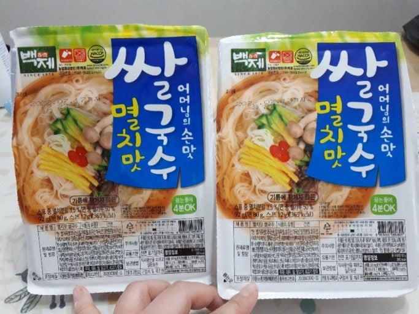
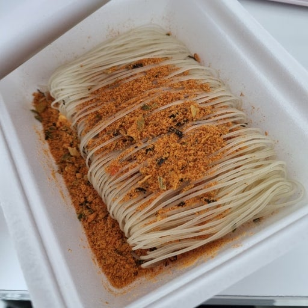

솔직히 맛있었음.


솔직히 맛있었음.
솔직히 물 버리고 스프조절하고 참기름 좀 넣으면 존나 맛있었음
물을 절반만 잡아야 맛있음
구러면 면이 익어? ㄷㄷㄷ
저거 용기 선 보면 절반이면 충분히 익음
뜨거운물이 있어야 맛있음
이건 뜨거운 물이 잘 나올때 먹어야 존맛인데 애매하게 미지근한 물 들어가면 일반 컵라면보다 훨씬 더 맛없어서 ㅋㅋ
끓는물 부어야 됨 ㄹㅇ
없어서 못먹음 개취 존맛
청양고추 짤라 넣으면 더 맛있음
물대신 우유넣고 렌지에 쫄여먹음
지금도 박스채 사서 먹음
오래 뿔리면 되는데, 육개장 먹던 버릇들이 있어서 설익은거 먹으니까 맨날 맛없다고 버림.
ㅈㄴ 호인데 이걸 뒤집을 단점이 행군같이 뜨거운물 못 받는 상황이면 못먹을 음식이 된다는거.. 광섬유 씹는 기분임

소신발언) 돈주고 사서 먹었음
꼬불한걸로 바뀐게 더 맛 떨어지는 느낌
이거 일반 컵라면에 2배이상 기다려야 맛잇음
전자렌지잇어야돼
맞음 ㅇㅇ 버디언도 맛있음
뜨거운물에 6-7분 담궈두고 신김치랑 먹으면 뚝딱이다
컵누들도 좋아 했어서, 저거도 좋아했었음
저녁 점호전에 물 싹 부어서 관물대에 샥 숨겨놨다가 점호 다 끝나고 바로 티비보면서 후루룩 할때 맛있엇음
난 존나 좋아하는데
난 맛있어서 혼자 부대 60인분 다 모아다 먹음 개꿀
난 지금도 사먹음
우유붓고 렌지 돌려먹는건 전군 공통 레시피임???
아니 그렇게 쓰레기 만들어서 먹은적 없음
정수기물은 100%아니고 한 90%맛있는듯
오독오독한 식감도 나쁘지않아
누가 이거 싫어하냐
이거 ㅈ같은 해물비빔이나 군대 코다리보다 1000배 나음
지금도 맛있게 먹음
초창기때는 안 익었지만 지금은 면 바껴서 잘익음
잘익히면 맛있던데 설익히면 엄…
잘 불려야함